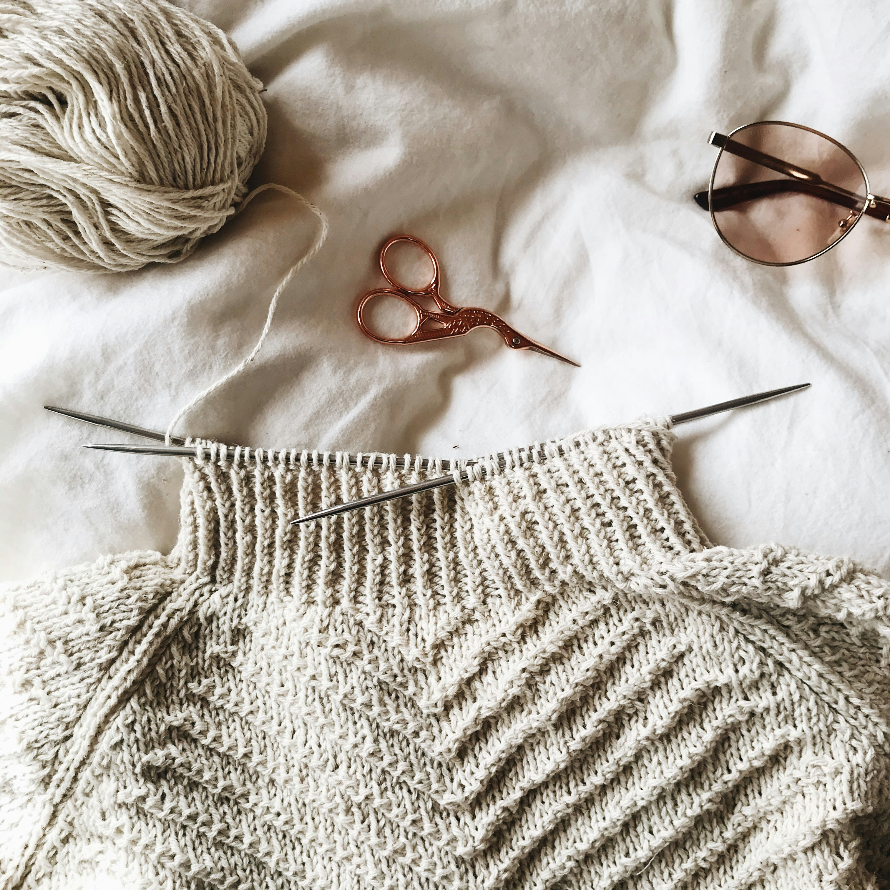

New: AI Pattern Generator available now!
Make your own pattern
The all-in-one platform for creators. Convert images seamlessly, design stunning colorworks, and access thousands of free patterns to elevate your projects.


+2k
Trusted by 2,000+ knitters worldwide

Conversion Done
0.2 seconds